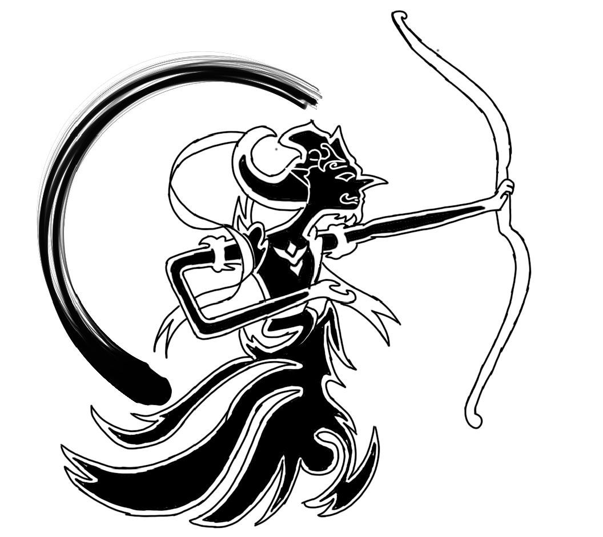

Tentang Aku

Aku penulis Nusa Antera, sebuah universe yang aku buat dan 7 Kilauan Pelangi adalah cerita dari universe tersebut.
Genre: Fantasi
Gambar di atas cuma placeholder. Nanti ganti sama cover bukumu.
Traktir Kopi ☕Dunia Nusa Antera

Nusa Antera: 7 Kilauan Pelangi
Perjalanan Zia Putri ke Hastinapura untuk mencari 7 Kesatria Pelangi dan mengembalikan hujan ke kerajaan.